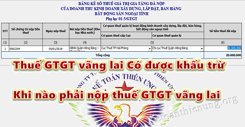

Khi nào phải nộp thuế GTGT vãng lai ngoại tỉnh? Thuế GTGT vãng lai ngoại tỉnh có được khấu trừ? Kế toán Diệu Tâm sẽ giải đáp vướng mắc đó và chia sẻ các trường hợp khi phải phải nộp thuế vãng lai, khi nào thì được miễn không phải nộp.
I. Thuế GTGT vãng lai ngoại tỉnh có được khấu trừ:
|
Căn cứ theo Khoản 6 Phụ luc I của Công văn số 4384/TCT-CS giới thiệu các nội dung mới của Thông tư 80/2021/TT-BTC 6. Về phân bổ thuế giá trị gia tăng (GTGT) phải nộp, trừ nhà máy thủy điện nằm trên nhiều tỉnh (Điều 13) Điểm mới 1: Sửa đổi quy định về khai thuế GTGT đối với hoạt động chuyển nhượng bất động sản tại tỉnh khác với nơi người nộp thuế đóng trụ sở chính (trừ trường hợp quy định tại điểm b khoản 1 Điều 11 Nghị định số 126/2020/NĐ-CP), cụ thể: - Giảm tỷ lệ khai thuế GTGT từ 2% xuống 1% trên doanh thu chưa có thuế GTGT đối với hoạt động chuyển nhượng bất động sản tại từng tỉnh nhằm tạo thuận lợi cho người nộp thuế. - Thay đổi cách thức bù trừ số thuế GTGT đã nộp của hoạt động chuyển nhượng bất động sản tại tỉnh khác nêu trên với số thuế GTGT phải nộp của trụ sở chính theo hướng người nộp thuế không phải kê khai số thuế GTGT đã nộp vào tờ khai thuế mà các cơ quan thuế tự thực hiện luân chuyển chứng từ nộp tiền của người nộp thuế để bù trừ giữa số thuế GTGT đã nộp của hoạt động chuyển nhượng bất động sản tại tỉnh khác với số thuế GTGT phải nộp tại trụ sở chính. Trước đây: Theo quy định tại điểm e khoản 1 và khoản 6 Điều 11 Thông tư số 156/2013/TT-BTC ngày 6/11/2013 của Bộ Tài chính và các văn bản sửa đổi, bổ sung thì tỷ lệ khai thuế GTGT đối với hoạt động chuyển nhượng bất động sản tại tỉnh khác với nơi người nộp thuế đóng trụ sở chính là 2% trên doanh thu chưa có thuế GTGT đối với hoạt động chuyển nhượng bất động sản tại từng tỉnh. Người nộp thuế kê khai số thuế GTGT đã nộp của hoạt động chuyển nhượng bất động sản tại tỉnh khác theo chứng từ nộp tiền vào hồ sơ khai thuế GTGT tại trụ sở chính để bù trừ với số phải nộp hoặc chuyển khấu trừ tiếp kỳ sau nếu không phát sinh số thuế phải nộp của kỳ đó. Điểm mới 2: Sửa đổi quy định về khai thuế GTGT đối với hoạt động xây dựng tại tỉnh khác với nơi người nộp thuế đóng trụ sở chính (hoạt động xây dựng được xác định theo quy định của pháp luật về hệ thống ngành kinh tế quốc dân và quy định của pháp luật chuyên ngành), cụ thể: - Sửa đổi về đối tượng khai thuế, nộp thuế là nhà thầu hoặc nhà thầu phụ trực tiếp ký hợp đồng hoặc phụ lục hợp đồng với chủ đầu tư để thi công công trình xây dựng tại tỉnh khác với nơi người nộp thuế đóng trụ sở chính. - Giảm tỷ lệ khai thuế GTGT từ 2% xuống 1% trên doanh thu của công trình, hạng mục công trình xây dựng tại từng tỉnh hoặc công trình, hạng mục công trình xây dựng liên quan tới nhiều tỉnh mà không xác định được doanh thu của công trình tại từng tỉnh. - Thay đổi cách thức bù trừ số thuế GTGT đã nộp của hoạt động xây dựng tại tỉnh khác nêu trên với số thuế GTGT phải nộp của trụ sở chính theo hướng người nộp thuế không phải kê khai số thuế GTGT đã nộp vào tờ khai thuế mà các cơ quan thuế tự thực hiện luân chuyển chứng từ nộp tiền của người nộp thuế để bù trừ giữa số thuế GTGT đã nộp của hoạt động xây dựng tại tỉnh khác với số thuế GTGT phải nộp tại trụ sở chính. Trước đây: Theo quy định tại điểm e khoản 1 và khoản 6 Điều 11 Thông tư số 156/2013/TT-BTC ngày 6/11/2013 của Bộ Tài chính và các văn bản sửa đổi, bổ sung thì tỷ lệ khai thuế đối với hoạt động xây dựng tại tỉnh khác với nơi người nộp thuế đóng trụ sở chính là 2% trên doanh thu của công trình, hạng mục công trình xây dựng tại từng tỉnh hoặc công trình, hạng mục công trình xây dựng liên quan tới nhiều tỉnh mà không xác định được doanh thu của công trình tại từng tỉnh. Người nộp thuế kê khai số thuế GTGT đã nộp của hoạt động xây dựng tại tỉnh khác theo chứng từ nộp tiền vào hồ sơ khai thuế GTGT tại trụ sở chính để bù trừ với số phải nộp hoặc chuyển khấu trừ tiếp kỳ sau nếu không phát sinh số thuế phải nộp của kỳ đó. Điểm mới 3: Bỏ quy định khai thuế GTGT phải nộp đối với hoạt động bán hàng tại tỉnh khác với nơi người nộp thuế đóng trụ sở chính nhưng không thành lập đơn vị trực thuộc tại tỉnh đó (hoạt động bán hàng vãng lai ngoại tỉnh). Trước đây: Theo quy định tại điểm e khoản 1 và khoản 6 Điều 11 Thông tư số 156/2013/TT-BTC ngày 6/11/2013 của Bộ Tài chính và các văn bản sửa đổi, bổ sung thì người nộp thuế có hoạt động bán hàng tại tỉnh khác với nơi đóng trụ sở chính nhưng không thành lập đơn vị trực thuộc tại tỉnh đó thì phải nộp hồ sơ khai thuế GTGT mẫu số 05/GTGT và nộp tiền cho địa phương nơi có hoạt động bán hàng vãng lai ngoại tỉnh. Điểm mới 4: Bỏ tiêu thức phân bổ thuế GTGT phải nộp của cơ sở sản xuất là đơn vị phụ thuộc, địa điểm kinh doanh khác tỉnh với nơi người nộp thuế đóng trụ sở chính trong trường hợp cơ sở sản xuất điều chuyển thành phẩm hoặc bán thành phẩm cho đơn vị khác trong nội bộ để bán ra là doanh thu của sản phẩm cùng loại tại địa phương nơi có cơ sở sản xuất để thống nhất thực hiện. Trước đây: Tại điểm d khoản 1 Điều 11 Thông tư số 156/2013/TT-BTC ngày 6/11/2013 của Bộ Tài chính quy định việc xác định doanh thu của sản phẩm sản xuất ra được xác định trên cơ sở giá thành sản phẩm hoặc doanh thu của sản phẩm cùng loại tại địa phương nơi có cơ sở sản xuất. Điểm mới 5: Sửa đổi quy định đơn vị phụ thuộc khác tỉnh với nơi người nộp thuế đóng trụ sở chính phải khai thuế GTGT riêng và nộp hồ sơ khai thuế cho cơ quan thuế quản lý đơn vị phụ thuộc là đơn vị phụ thuộc trực tiếp bán hàng, sử dụng hóa đơn do đơn vị phụ thuộc đăng ký hoặc do người nộp thuế đăng ký với cơ quan thuế quản lý đơn vị phụ thuộc, theo dõi hạch toán đầy đủ thuế giá trị gia tăng đầu ra, đầu vào. Trước đây: Tại điểm c khoản 1 Điều 11 Thông tư số 156/2013/TT-BTC ngày 6/11/2013 của Bộ Tài chính quy định các đơn vị trực thuộc khác tỉnh với nơi người nộp thuế đóng trụ sở chính phải nộp hồ sơ khai thuế GTGT cho cơ quan thuế quản lý trực tiếp của đơn vị trực thuộc (trừ đơn vị trực thuộc không trực tiếp bán hàng, không phát sinh doanh thu thì thực hiện khai thuế tập trung tại trụ sở chính của người nộp thuế). Điểm mới 6: Quy định về phân bổ số thuế giá trị gia tăng phải nộp đối với hoạt động kinh doanh xổ số điện toán khác tỉnh. Trước đây: Người nộp thuế thực hiện phân bổ số thuế giá trị gia tăng phải nộp đối với hoạt động kinh doanh xổ số điện toán khác tỉnh theo hướng dẫn tại công văn số 4311/TCT-DNL ngày 03/10/2014 của Tổng cục Thuế. Điểm mới 7: Sửa đổi quy định về Kho bạc nhà nước (KBNN) thực hiện khấu trừ tiền thuế GTGT của các nhà thầu khi thực hiện thủ tục thanh toán vốn đầu tư xây dựng cơ bản của ngân sách nhà nước (NSNN) cho chủ đầu tư, cụ thể: - Sửa đổi các nội dung về KBNN không thực hiện khấu trừ thuế GTGT. - Thay đổi quy định về tỷ lệ khấu trừ thuế GTGT của KBNN là 1% trên doanh thu chưa có thuế GTGT của công trình, hạng mục công trình xây dựng cơ bản. Trường hợp công trình, hạng mục công trình xây dựng nằm trên nhiều tỉnh mà không xác định được doanh thu của công trình ở từng tỉnh thì sau khi xác định tỷ lệ 1% trên doanh thu chưa có thuế GTGT của công trình, hạng mục công trình xây dựng, căn cứ vào tỷ lệ (%) giá trị đầu tư của công trình tại từng tỉnh trên tổng giá trị đầu tư để xác định số thuế GTGT phải nộp cho từng tỉnh. Trước đây: Theo quy định tại Khoản 3 Điều 28 Thông tư số 156/2013/TT-BTC của Bộ Tài chính và các văn bản sửa đổi, bổ sung thì tỷ lệ khấu trừ thuế GTGT của KBNN là 2% trên số tiền thanh toán khối lượng các công trình, hạng mục công trình xây dựng cơ bản bằng nguồn vốn NSNN, các khoản thanh toán từ nguồn NSNN cho các công trình xây dựng cơ bản của các dự án sử dụng vốn ODA thuộc diện chịu thuế GTGT (phần vốn đối ứng trong nước thanh toán tại KBNN cho các công trình xây dựng cơ bản của các dự án ODA). |
Như vậy: Số tiền thuế GTGT vãng lai mà DN các bạn đã nộp tại nơi khác sẽ Được bù trừ với số thuế GTGT phải nộp tại trụ sở chính.
|
Theo Công văn số 49012/CT-HTr ngày 25/7/2016 của Cục thuế TP Hà Nội "Căn cứ quy định trên, trường hợp công ty có phát sinh doanh thu từ hoạt động xây dựng tại thành phố Trà Vinh, công ty đã nộp thuế GTGT tại thành phố Trà Vinh thì khi khai thuế với cơ quan thuế quản lý trực tiếp, công ty phải tổng hợp doanh thu phát sinh và số thuế giá trị gia tăng đã nộp của doanh thu kinh doanh xây dựng ngoại tỉnh trong hồ sơ khai thuế tại trụ sở chính. Số thuế đã nộp (theo chứng từ nộp tiền thuế) của doanh thu kinh doanh xây dựng ngoại tỉnh công ty kê khai vào chỉ tiêu 39 trên tờ khai 01/GTGT để thực hiện bù trừ vào số thuế giá trị gia tăng phải nộp theo tờ khai thuế giá trị gia tăng của người nộp thuế tại trụ sở chính." |
Cách kê khai tại trụ sở chính như sau:
- Các bạn kê khai vào Phụ lục PL 01-5/GTGT của Tờ khai 01/GTGT trụ sở chính (nhập số tiền thuế đã nộp theo chứng từ khấu trừ thuế vào đây) -> Sau đó ấn “Ghi”

- Phần mềm sẽ tự động cập nhật số tiền thuế đó (được khấu trừ) vào Chỉ tiêu số [39] "Số thuế đã nộp vãng lai ngoại tỉnh" trên Tờ khai GTGT khấu trừ (01/GTGT).
--------------------------------------------------------------
II. Khi nào phải nộp thuế GTGT vãng lai ngoại tỉnh:
Theo khoản 1 điều 2 Thông tư 26/2015/TT-BTC ngày 27 tháng 02 năm 2015 của Bộ tài chính:
Trường hợp người nộp thuế có hoạt động kinh doanh xây dựng, lắp đặt, bán hàng vãng lai ngoại tỉnh mà giá trị công trình xây dựng, lắp đặt, bán hàng vãng lai ngoại tỉnh bao gồm cả thuế GTGT từ 1 tỷ đồng trở lên, và chuyển nhượng bất động sản ngoại tỉnh không thuộc trường hợp quy định tại điểm c khoản 1 Điều này, mà không thành lập đơn vị trực thuộc tại địa phương cấp tỉnh khác nơi người nộp thuế có trụ sở chính (sau đây gọi là kinh doanh xây dựng, lắp đặt, bán hàng vãng lai, chuyển nhượng bất động sản ngoại tỉnh) thì người nộp thuế phải nộp hồ sơ khai thuế cho cơ quan thuế quản lý tại địa phương có hoạt động xây dựng, lắp đặt, bán hàng vãng lai và chuyển nhượng bất động sản ngoại tỉnh.
Căn cứ tình hình thực tế trên địa bàn quản lý, giao Cục trưởng Cục Thuế địa phương quyết định về nơi kê khai thuế đối với hoạt động xây dựng, lắp đặt, bán hàng vãng lai ngoại tỉnh và chuyển nhượng bất động sản ngoại tỉnh.
Tức là:
- Nếu có hoạt động xây dựng, lắp đặt, bán hàng vãng lai ngoại tỉnh mà có giá trị gồm cả thuế GTGT từ 1 tỷ đồng trở lên -> Thì phải kê khai thuế GTGT vãng lại tại địa phương đó
- Nếu có hoạt động chuyển nhượng bất động sản vãng lai (không phân biệt lớn hơn hay nhỏ hơn 1 tỷ) -> Thì phải kê khai thuế GTGT vãng lai tại địa phương đó.
-----------------------------------------------------------------------------------------------
Ví dụ 16: Công ty A trụ sở tại Hải Phòng ký hợp đồng cung cấp xi măng cho Công ty B có trụ sở tại Hà Nội. Theo hợp đồng, hàng hóa sẽ được Công ty A giao tại công trình mà công ty B đang xây dựng tại Hà Nội. Hoạt động bán hàng này không được gọi là bán hàng vãng lai ngoại tỉnh. Công ty A thực hiện kê khai thuế GTGT tại Hải Phòng, không phải thực hiện kê khai thuế GTGT tại Hà Nội đối với doanh thu từ hợp đồng bán hàng cho Công ty B.
Ví dụ 17: Công ty B có trụ sở tại thành phố Hồ Chí Minh có các kho hàng tại Hải Phòng, Nghệ An không có chức năng kinh doanh. Khi Công ty B xuất bán hàng hóa tại kho ở Hải Phòng cho Công ty C tại Hưng Yên thì Công ty B không phải kê khai thuế GTGT tại địa phương nơi có các kho hàng (Hải Phòng, Nghệ An).
Ví dụ 18:
- Công ty A có trụ sở tại Hà Nội ký hợp đồng với Công ty B chỉ để thực hiện tư vấn, khảo sát, thiết kế công trình được xây dựng tại Sơn La mà Công ty B là chủ đầu tư thì hoạt động này không phải hoạt động kinh doanh xây dựng, lắp đặt ngoại tỉnh. Công ty A thực hiện khai thuế GTGT đối với hợp đồng này tại trụ sở chính tại Hà Nội, không phải thực hiện kê khai thuế GTGT tại Sơn La.
- Công ty A có trụ sở tại Hà Nội ký hợp đồng với Công ty C để thực hiện công trình được xây dựng (trong đó có bao gồm cả hoạt động khảo sát, thiết kế) tại Sơn La mà Công ty C là chủ đầu tư, giá trị công trình bao gồm cả thuế GTGT trên 1 tỷ đồng thì Công ty A thực hiện khai thuế GTGT xây dựng ngoại tỉnh đối với hợp đồng này tại Sơn La.
- Công ty A có trụ sở tại Hà Nội ký hợp đồng với Công ty Y để thực hiện công trình được xây dựng (trong đó có bao gồm cả hoạt động khảo sát, thiết kế) tại Yên Bái mà Công ty C là chủ đầu tư, giá trị công trình bao gồm cả thuế GTGT là 770 triệu đồng thì Công ty A không phải thực hiện khai thuế GTGT xây dựng ngoại tỉnh đối với hợp đồng này tại Sơn La
Ví dụ 19: Công ty B trụ sở tại Hà Nội bán máy điều hoà cho khách tại Hòa Bình (bao gồm cả lắp đặt) thì Công ty B không phải kê khai thuế GTGT tại Hoà Bình.
Ví dụ 20: Công ty A có trụ sở tại Hà Nội mua 10 căn nhà thuộc 1 dự án của Công ty B tại thành phố Hồ Chí Minh. Sau đó Công ty A bán lại các căn nhà này và thực hiện xuất hóa đơn cho khách hàng C thì Công ty A phải thực hiện kê khai, nộp thuế đối với hoạt động chuyển nhượng bất động sản ngoại tỉnh theo tỷ lệ % doanh thu với cơ quan thuế tại thành phố Hồ Chí Minh.”
-----------------------------------------------------------------------------------
“Trường hợp người nộp thuế có công trình xây dựng, lắp đặt ngoại tỉnh liên quan tới nhiều địa phương như: xây dựng đường giao thông, đường dây tải điện, đường ống dẫn nước, dẫn dầu, dẫn khí,..., không xác định được doanh thu của công trình ở từng địa phương cấp tỉnh thì người nộp thuế khai thuế GTGT của doanh thu xây dựng, lắp đặt ngoại tỉnh chung với hồ sơ khai thuế GTGT tại trụ sở chính và nộp thuế GTGT cho các tỉnh nơi có công trình đi qua.
=> Số thuế GTGT phải nộp cho các tỉnh được tính theo tỷ lệ (%) giá trị đầu tư của công trình tại từng tỉnh do người nộp thuế tự xác định nhân (x) với 2% doanh thu chưa có thuế GTGT của hoạt động xây dựng công trình.
Số thuế GTGT đã nộp (theo chứng từ nộp thuế) của hoạt động xây dựng công trình liên tỉnh được trừ (-) vào số thuế phải nộp trên Tờ khai thuế GTGT (mẫu số 01/GTGT) của người nộp thuế tại trụ sở chính.
Người nộp thuế lập Bảng phân bổ số thuế GTGT phải nộp cho các địa phương nơi có công trình xây dựng, lắp đặt liên tỉnh (mẫu số 01-7/GTGT ban hành kèm theo Thông tư 26) và sao gửi kèm theo Tờ khai thuế GTGT cho Cục Thuế nơi được hưởng nguồn thu thuế GTGT.”
--------------------------------------------------------------------------------------
KÊ KHAI THUẾ GTGT VÃNG LAI tại ngoại tỉnh:
a) Người nộp thuế kinh doanh xây dựng, lắp đặt, bán hàng vãng lai, chuyển nhượng bất động sản ngoại tỉnh thì:
- Khai thuế GTGT tạm tính theo tỷ lệ 2% đối với hàng hoá chịu thuế suất thuế GTGT 10%
- Hoặc theo tỷ lệ 1% đối với hàng hoá chịu thuế suất thuế GTGT 5% trên doanh thu hàng hoá chưa có thuế GTGT.
-> Nộp cho cơ quan Thuế quản lý địa phương nơi có hoạt động xây dựng, lắp đặt, bán hàng vãng lai, chuyển nhượng bất động sản ngoại tỉnh.
b) Hồ sơ khai thuế GTGT đối với hoạt động kinh doanh xây dựng, lắp đặt, bán hàng vãng lai, chuyển nhượng bất động sản ngoại tỉnh là Tờ khai thuế giá trị gia tăng theo mẫu số 05/GTGT ban hành kèm theo Thông tư số 156/2013/TT-BTC ngày 06/11/2013 của Bộ Tài chính.
c) Hồ sơ khai thuế GTGT đối với hoạt động kinh doanh xây dựng, lắp đặt, bán hàng vãng lai, chuyển nhượng bất động sản ngoại tỉnh được nộp theo từng lần phát sinh doanh thu.
-> Trường hợp phát sinh nhiều lần nộp hồ sơ khai thuế trong một tháng thì người nộp thuế có thể đăng ký với Cơ quan thuế nơi nộp hồ sơ khai thuế để nộp hồ sơ khai thuế GTGT theo tháng.
Hồ sơ khai thuế GTGT vãng lai tại trụ sở chính:
Trường hợp người nộp thuế có hoạt động kinh doanh xây dựng, lắp đặt, bán hàng vãng lai, chuyển nhượng bất động sản ngoại tỉnh thì người nộp thuế nộp cùng Tờ khai thuế GTGT tài liệu sau:
- Bảng tổng hợp số thuế GTGT đã nộp của doanh thu kinh doanh xây dựng, lắp đặt, bán hàng vãng lai, chuyển nhượng bất động sản ngoại tỉnh (nếu có) theo mẫu số 01-5/GTGT ban hành kèm theo Thông tư số 156/2013/TT-BTC ngày 06/11/2013 của Bộ Tài chính.
- Bảng phân bổ số thuế GTGT phải nộp cho các địa phương nơi có công trình xây dựng, lắp đặt liên tỉnh (nếu có) theo mẫu số 01-7/GTGT ban hành kèm theo Thông tư 26.”
Có thể xem thêm: Cách kê khai thuế GTGT vãng lai ngoại tỉnh
-------------------------------------------------------------------------------------------------
Một số trường hợp cụ thể khác các bạn nên biết:
Lặp đặt điều hòa, hệ thống bơm ngoại Tỉnh phải kê khai vãng lai:
Công văn 75594/CT-TTHT ngày 13/11/2018 của Cục thuế TP Hà Nội:
"Căn cứ các quy định trên, trường hợp Công ty TNHH kỹ thuật Taikisha Việt Nam có trụ sở chính tại Hà Nội, thực hiện ký hợp đồng cung cấp và lắp đặt hệ thống bơm và điều hòa không khí cho nhà thầu chính tại Tỉnh Bình Dương năm 2014, thì hoạt động nêu trên của Công ty là hoạt động kinh doanh xây dựng, lắp đặt vãng lai ngoại tỉnh.
-> Công ty thực hiện khai, nộp thuế GTGT tạm tính theo tỷ lệ 2% trên doanh thu chưa tính thuế của hợp đồng thi công lắp đặt vãng lai ngoại tỉnh nêu trên cho Cục thuế tỉnh Bình Dương.
-> Số thuế GTGT đã nộp (theo chứng từ nộp thuế) của hoạt động thi công lắp đặt vãng lai ngoại tỉnh Bình Dương được trừ (-) vào số thuế phải nộp trên Tờ khai thuế GTGT của Công ty tại trụ sở chính.
- Trường hợp Công ty không thực hiện kê khai và nộp thuế GTGT của hoạt động thi công lắp đặt vãng lai nêu trên tại tỉnh Bình Dương mà đã khai, nộp thuế toàn bộ số thuế GTGT phát sinh tại trụ sở chính thì việc kê khai, nộp thuế của Công ty chưa đúng quy định.
+ Đối với nghĩa vụ thuế vãng lai thuộc năm ngân sách chưa quyết toán và Công ty có phát sinh số thuế GTGT phải nộp, đã nộp Ngân sách nhà nước tại trụ sở chính bao gồm cả số thuế GTGT phải nộp vãng lai tại tỉnh Bình Dương:
Công ty làm văn bản đề nghị chuyển số thuế GTGT vãng lai phải nộp tại tỉnh Bình Dương nhưng đã nộp tại trụ sở chính để hoàn thành nghĩa vụ nộp thuế GTGT vãng lai tại tỉnh Bình Dương (phải đảm bảo nguyên tắc số thuế GTGT đề nghị điều chuyển cho tỉnh Bình Dương không lớn hơn số thuế GTGT đã nộp tại trụ sở chính).
+ Đối với số thuế phải nộp vãng lai tại tỉnh Bình Dương đã được Công ty khai, nộp tại trụ sở chính nhưng thuộc năm ngân sách đã được quyết toán thì không thực hiện điều chỉnh lại."
---------------------------------------------------------------------------------------------------------
Xây dựng công trình trong khu phi thuế quan được miễn nộp thuế vãng lai:
Theo Công văn số 3759/BTC-TCT ngày 2/4/2018 của Tổng cục thuế
"Căn cứ các quy định trên, Bộ tài chính trả lời các vướng mắc của bà Phạm Thị Duyến như sau:
Công ty LIFE (Có trụ sở chính tại thành phố Hà Nội, kê khai nộp thuế GTGT theo phương pháp khấu trừ thuế) có hoạt động xây dựng cho doanh nghiệp trong khu phi thuế quan (Được áp dụng thuế suất thuế GTGT 0%) tại tỉnh, thành phố trực thuộc Trung ương (công ty không có chi nhánh tại tỉnh, thành phố này) khác nơi đóng trụ sở chính thì Công ty không phải kê khai nộp thuế GTGT đối với hoạt động xây dựng vãng lai này.
Trường hợp công ty LIFE có hợp đồng xây dựng công trình ở tỉnh Bắc Ninh (Công ty không có chi nhánh tại tỉnh này), hợp đồng có thỏa thuận chủ đầu tư thanh toán toàn bộ công trình cho công ty và Công ty xuất hóa đơn GTGT cho toàn bộ công trình; Sau đó công ty có hợp đồng giao lại một số hạng mục công trình cho nhà thầu phụ thực hiện thì Công ty khai và nộp thuế GTGT đối với hoạt động xây dựng vãng lai này tại tỉnh Bắc Ninh theo quy định đối với toàn bộ giá trị công trình bàn giao chưa có thuế GTGT. Trường hợp công ty chưa nộp số tiền thuế vãng lai này thì công ty bị tính tiền chậm nộp đối với số tiền chưa nộp theo quy định.
Trường hợp công ty LIFE có số thuế GTGT đầu vào chưa được khấu trừ hết và đủ điều kiện được hoàn thuế GTGT thì Công ty lập hồ sơ đề nghị hoàn thuế gửi cơ quan thuế quản lý trực tiếp (Tại thành phố Hà Nội) để được xem xét giải quyết hoàn thuế theo quy định. Số thuế GTGT được hoàn (nếu có) sẽ được bù trừ với số thuế GTGT phải nộp của hoạt động xây dựng vãn lai tại tỉnh Bắc Ninh theo quy định của Luật quản lý thuế kể từ ngày cơ quan thuế ban hành quyết định về việc hoàn thuế kiêm bù trừ thu ngân sách nhà nước."
Bán thiết bị kèm dịch vụ lắp đặt phải nộp thuế vãng lai:
Theo Công văn số 12184/CT-TTHT ngày 28/3/2018 của Cục thuế TP Hà Nội
Căn cứ quy định trên, trường hợp năm 2016, Công ty cổ phần thiết bị Tân Phát (có trụ sở chính tại Hà Nội) thực hiện ký hợp đồng khảo sát, thiết kế, cung cấp, lắp đặt thiết bị và dịch vụ kỹ thuật công trình: đầu tư mới hệ thống cắt cuộn xeo 1 (đầu tư mới hệ thống dao cắt và các thiết bị phụ trợ) - nhà máy Giấy - Tổng công ty Giấy Việt Nam (có trụ sở tại Huyện Phù Ninh, tỉnh Phú Thọ) thì Công ty cổ phần thiết bị Tân Phát phải thực hiện kê khai, nộp thuế GTGT đối với hoạt động cung cấp, lắp đặt, thi công công trình tại Phú Thọ theo hướng dẫn tại điểm a, Khoản 1 Điều 2 Thông tư số 26/2015/TT-BTC ngày 27/2/2015 của Bộ Tài chính.
Tuy nhiên: Đó là trường hợp nếu phát sinh giá trị hợp đồng từ 1 tỷ trở lên.
Thuê mặt bằng nhà xưởng tại tỉnh khác phải nộp thuế vãng lai
Công văn số 3753/TCT-KK ngày 14/9/2015 của Tổng cục thuế
Trường hợp Công ty cổ phần Toyota Vinh (Nghệ An) thuê mặt bằng nhà xưởng của Công ty Cổ phần Ô tô Hà Vinh (Hà Tĩnh) để thực hiện việc sửa chữa và kinh doanh sản phẩm xe ô tô Toyota mà không thành lập đơn vị trực thuộc tại tỉnh Hà Tĩnh thì được coi là hoạt động kinh doanh bán hàng vãng lai ngoại tỉnh. Công ty có trách nhiệm kê khai, nộp thuế GTGT 2% trên doanh thu chưa có thuế GTGT với cơ quan thuế quản lý địa phương tại tỉnh Hà Tĩnh.
Cho thuê lại kho hàng ở tỉnh thì Không phải nộp thuế vãng lai:
Theo Công văn số 5444/TCT-KK ngày 27/11/2017 của Tổng cục thuế:
Theo nội dung trình bày tại công văn số 18/TCKT-VLC ngày 21/9/2017, Công ty TNHH tiếp vận Vinafco có trụ sở chính tại Thành phố Hà Nội, ký hợp đồng thuê kho (có thời hạn) của các công ty khác tại các tỉnh, thành phố khác. Tại các kho này Công ty thực hiện hoạt động cho thuê kho, lưu giữ và bảo quản hàng hóa, bốc xếp hàng hóa thuộc nhóm ngành Vận tải kho bãi thì hoạt động của Công ty không thuộc trường hợp điều chỉnh tại Điểm a, Khoản 1, Điều 2 Thông tư số 26/2015/TT-BTC ngày 27/02/2015. Nếu Công ty có đơn vị trực thuộc kinh doanh ở địa phương cấp tỉnh khác nơi Công ty có trụ sở chính (đơn vị trực thuộc khác tỉnh) thì đơn vị trực thuộc nộp hồ sơ khai thuế GTGT cho cơ quan thuế quản lý trực tiếp đơn vị trực thuộc; nếu Công ty không có đơn vị trực thuộc khác tỉnh hoặc có đơn vị trực thuộc khác tỉnh nhưng đơn vị trực thuộc không trực tiếp bán hàng, không phát sinh doanh thu thì thực hiện khai thuế tập trung tại trụ sở chính.
Theo Công văn số 56621/CT-TTHT ngày 21/8/2017 của Cục thuế TP Hà Nội
Căn cứ các quy định nêu trên, trường hợp Công ty TNHH tiếp vận Vinafco có trụ sở chính tại Hà Nội có thuê kho chứa hàng tại các tỉnh, thành phố khác để cho khách hàng của Công ty thuê lại không thuộc đối tượng quy định tại Điểm a Khoản 1 Điều 2 Thông tư số 26/2015/TT-BTC ngày 27/02/2015 của Bộ Tài chính thì Công ty không phải kê khai, nộp thuế GTGT vãng lai ngoại tỉnh tại các địa phương mà thực hiện khai thuế tập trung tại trụ sở chính của Công ty.
"Dịch vụ" ngoại tỉnh Không phải nộp thuế GTGT vãng lai:
Theo Công văn số 3540/TCT-KK ngày 9/8/2017 của Tổng cục thuế:
Các hoạt động vệ sinh của Công ty TNHH MTV DV Xuyên Thái Bình Dương (MST 0309493985), Công ty CP Care VN (MST 0304904014); bảo vệ và trông giữ xe của Công ty TNHH DV bảo vệ FSB (MST 0311611964), Công ty TNHH XD Trường Sơn Tây (MST 0303189516), Công ty TNHH DV bảo vệ an ninh Toàn cầu (MST 0308895441) cung cấp cho Chi nhánh Công ty cổ phần bất động sản Việt Nhật tại Cần Thơ là hoạt động dịch vụ, không phải là hoạt động xây dựng, lắp đặt, không phải là hàng hóa nên không thuộc diện phải kê khai nộp thuế đối với hoạt động kinh doanh xây dựng, lắp đặt, bán hàng vãng lai ngoại tỉnh. Các Công ty trên thực hiện kê khai, nộp thuế đối với dịch vụ cung cấp cho Chi nhánh Công ty cổ phần bất động sản Việt Nhật theo hướng dẫn tại Điểm c Khoản 1 Điều 11 Thông tư số 156/2013/TT-BTC nêu trên.
Dịch vụ sửa chữa ngoài tỉnh không phải thuế vãng lai
Theo Công văn số 1529/TCT-KK ngày 20/4/2017 của Tổng cục thuế:
Căn cứ quy định nêu trên, trường hợp Công ty TNHH GE Power Việt Nam (trụ sở chính tại Hà Nội) ký hợp đồng kinh doanh với Tổng công ty Lắp máy Việt Nam - Công ty TNHH Một thành viên (Lilama) về việc cung cấp dịch vụ sửa chữa máy móc (mặt ghép vỏ ngoài tua bin số 2) thuộc dự án xây dựng nhà máy nhiệt điện Vũng Áng 1 tại tỉnh Hà Tĩnh, phạm vi các công việc thực hiện theo hợp đồng gồm: thị sát, đo kiểm tra kích thước, sửa chữa mặt ghép vỏ ngoài tua bin cao trung áp, sửa chữa mặt ghép vỏ ngoài tua bin hạ áp và cung cấp dụng cụ, vật tư đặc chủng phục vụ công tác sửa chữa thì hoạt động này không phải là hoạt động kinh doanh xây dựng, lắp đặt, bán hàng vãng lai ngoại tỉnh. Công ty không thành lập chi nhánh, do đó việc kê khai và nộp thuế GTGT đối với doanh thu phát sinh của hợp đồng nêu trên thực hiện kê khai tập trung tại cơ quan thuế quản lý trực tiếp trụ sở chính.
Cho thuê TSCĐ ngoại tỉnh không phải nộp thuế vãng lai:
Công văn số 76403/CT-HTr ngày 2/12/2015 của cục thuế TP Hà Nội:
Căn cứ các quy định trên, Công ty có trụ sở chính tại Hà Nội có hoạt động cho thuê tài sản là máy móc, thiết bị tại khu kinh tế Vũng Áng, huyện Kỳ Anh, tỉnh Hà Tĩnh thì hoạt động này không phải là hoạt động kinh doanh xây dựng, lắp đặt, bán hàng vãng lai và không thuộc đối tượng áp dụng nộp hồ sơ khai thuế giá trị gia tăng theo tiết e Khoản 1 Điều 10 Thông tư số 28/2011/TT-BTC ngày 28/02/2011, tiết đ Khoản 1 Điều 11 Thông tư số 156/2013/TT-BTC ngày 06/11/2013 và tiết a Khoản 1 Điều 2 Thông tư số 26/2015/TT-BTC ngày 27/02/2015 của Bộ Tài chính sửa đổi, bổ sung Thông tư số 156/2013/TT-BTC ngày 6/11/2013 của Bộ Tài chính.
Bán hàng tại kho ngoài tỉnh không phải nộp thuế vãng lai
Công văn số 963/CT-TTHT ngày 7/2/2017 của Cục thuế TP Hồ chí Minh
Trường hợp theo Công ty trình bày trụ sở chính tại TP. HCM, có thuê kho lưu trữ hàng tại Đà Nẵng thì khi Công ty vận chuyển hàng hóa từ thành phố Hồ Chí Minh đến kho hàng tại Đà Nẵng, Công ty sử dụng Phiếu xuất kho kiêm vận chuyển nội bộ kèm theo Lệnh điều động nội bộ.
Trường hợp kho hàng của Công ty tại Đà Nẵng không có chức năng kinh doanh thì khi công ty xuất bán hàng hóa cho khách hàng, giao hàng tại kho ở Đà Nẵng, Công ty lập hóa đơn và giao cho khách hàng, kê khai nộp thuế theo quy định (Tức là công ty sẽ xuất hóa đơn và kê khai thuế GTGT tại công ty)
Về việc đăng ký bổ sung thông tin đăng ký kinh doanh kho hàng tại Đà Nẵng đề nghị Công ty liên hệ Sở Kế hoạch và Đầu tư để được hướng dẫn theo thẩm quyền.
Nộp nhầm thuế vãng lai tại trụ sở chính được miễn phạt chậm nộp
Công văn số 4045/TCT-KK ngày 6/9/2016 của Tổng cục thuế:
Căn cứ các quy định nêu trên, trường hợp Công ty TNHH Công Trình Cơ Tướng Long Việt Nam (trụ sở chính tại tỉnh Đồng Nai) có hoạt động xây dựng cơ bản vãng lai tại tỉnh Hà Tĩnh từ năm 2010 đến nay và Công ty cổ phần Xây lắp dầu khí miền Trung (trụ sở chính tại thành phố Đà Nẵng) có hoạt động thi công vãng lai tại tỉnh Hà Tĩnh từ tháng 8/2010 đến tháng 12/2014. Công ty đã khai, nộp toàn bộ số thuế GTGT phát sinh tại tỉnh/thành phố nơi đặt trụ sở chính thì Công ty không bị xử phạt về hành vi trốn thuế, không phải nộp tiền chậm nộp đối với số thuế GTGT vãng lai phát sinh tại tỉnh Hà Tĩnh.
Đối với số thuế phải nộp vãng lai tại Hà Tĩnh đã được Công ty TNHH Công Trình Cơ Tướng Long Việt Nam, Công ty cổ phần Xây lắp dầu khí miền Trung khai, nộp tại tỉnh/thành phố đặt trụ sở chính thuộc niên độ ngân sách từ 2015 trở về trước đã được quyết toán, các cơ quan thuế không thực hiện điều chỉnh lại.
Đối với số thuế phải nộp vãng lai tại Hà Tĩnh đã được Công ty TNHH Công Trình Cơ Tướng Long Việt Nam, Công ty cổ phần Xây lắp dầu khí miền Trung khai nộp tại tỉnh/thành phố đặt trụ sở chính trong năm 2016, để giảm thủ tục hành chính cho người nộp thuế, Cục Thuế nơi Công ty đặt trụ sở chính hướng dẫn Công ty có văn bản đề nghị chuyển số thuế giá trị gia tăng vãng lai phải nộp tại Chi cục Thuế thị xã Kỳ Anh, tỉnh Hà Tĩnh mà Công ty đã nộp tại tỉnh/thành phố nơi đặt trụ sở chính, từ tài khoản Kho bạc Nhà nước tỉnh/thành phố nơi đặt trụ sở chính sang tài khoản Kho bạc Nhà nước thị xã Kỳ Anh, tỉnh Hà Tĩnh để hoàn thành nghĩa vụ nộp thuế giá trị gia tăng vãng lai tại Chi cục Thuế thị xã Kỳ Anh, tỉnh Hà Tĩnh.
Căn cứ văn bản đề nghị của Công ty, Cục Thuế tỉnh Đồng Nai, Cục Thuế thành phố Đà Nẵng ban hành Lệnh hoàn trả kiêm bù trừ thu theo mẫu số C1-05/NS gửi Kho bạc Nhà nước cùng tỉnh. Kho bạc Nhà nước tỉnh Đồng Nai, Kho bạc Nhà nước thành phố Đà Nẵng thực hiện hạch toán giảm thu ngân sách năm 2016, Kho bạc Nhà nước tỉnh Hà Tĩnh hạch toán tăng thu ngân sách nhà nước năm 2016 tương ứng theo từng cấp ngân sách, đúng mục lục ngân sách nhà nước của các khoản đã thu cần điều chuyển.
Nếu có nhiều hàng mục xây dựng mà cộng tổng từ 1 tỷ đồng trở lên phải nộp thuế vãng lai
Công văn số 76825/CT-HTr ngày 4/12/2015 của cục thuế TP Hà Nội:
Căn cứ quy định trên, trường hợp Công ty TNHH FoneN Việt Nam do Cục Thuế TP Hồ Chí Minh quản lý, Công ty thực hiện 2 hợp đồng dịch vụ cho 2 hạng mục tại cùng 1 công trình xây dựng tại quận Long Biên - Hà Nội, giá trị từng hợp đồng bao gồm cả thuế GTGT dưới 1 tỷ đồng nhưng tổng giá trị 2 hợp đồng trên 1 tỷ thì:
- Trường hợp Công ty đã được cấp mã số thuế tại Cục Thuế TP Hồ Chí Minh, có phát sinh hoạt động sản xuất kinh doanh mới tại Hà Nội (không thành lập chi nhánh hoặc đơn vị trực thuộc) thì Công ty thực hiện đăng ký thuế với Cục Thuế TP Hà Nội theo quy định tại Khoản 1 Điều 9 Thông tư số 80/2012/TT-BTC.
- Công ty phải nộp hồ sơ khai thuế đối với hoạt động xây dựng, lắp đặt cho Chi cục Thuế quận Long Biên. Việc kê khai, tính nộp thuế GTGT, Công ty thực hiện theo hướng dẫn cụ thể tại Khoản 1 Điều 2 Thông tư số 26/2015/TT-BTC ngày 27/02/2015 của Bộ Tài chính. Hồ sơ khai thuế GTGT đối với hoạt động kinh doanh xây dựng, lắp đặt, bán hàng vãng lai, chuyển nhượng bất động sản ngoại tỉnh được nộp theo từng lần phát sinh doanh thu. Trường hợp phát sinh nhiều lần nộp hồ sơ khai thuế trong một tháng thì Công ty có thể đăng ký với Cơ quan thuế nơi nộp hồ sơ khai thuế để nộp hồ sơ khai thuế GTGT theo tháng.
Chúc các bạn thành công!
--------------------------